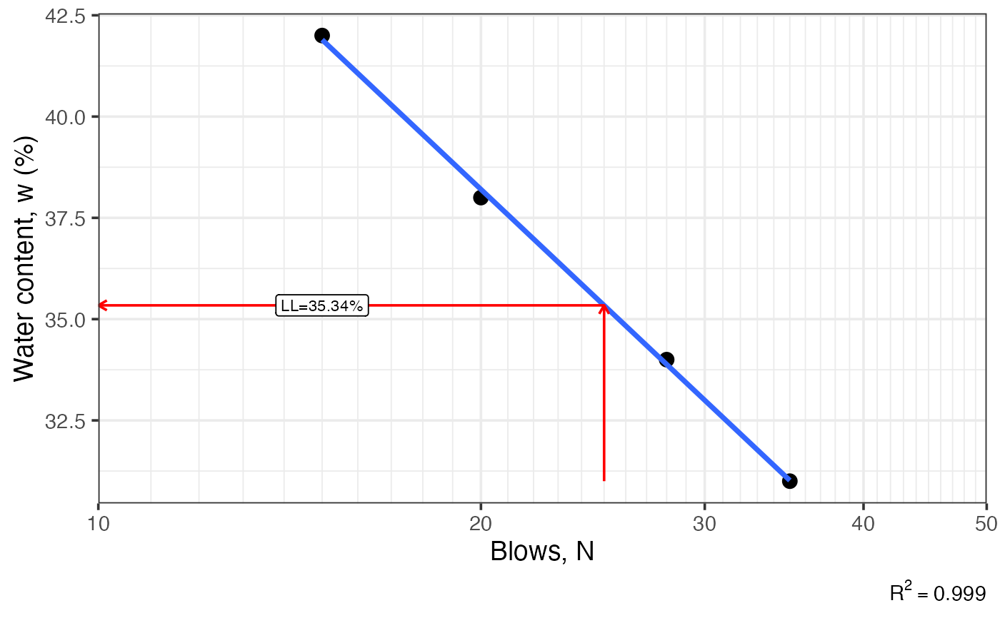
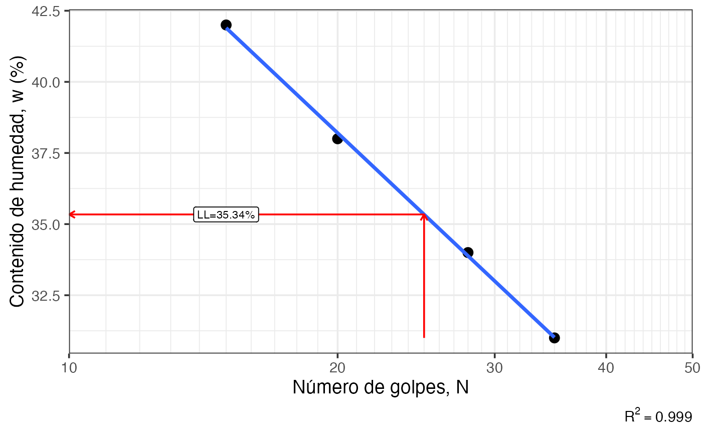

Fits a linear regression of water content vs log10(blows) from a Casagrande cup liquid limit test, estimates the liquid limit (LL) at N = 25 blows, and optionally computes plasticity index (PI), liquidity index (LI), and consistency index (CI).
Arguments
- N
numeric vector. Number of blows recorded for each trial.
- W
numeric vector. Water content (percent) corresponding to each value in
N.- pl
numeric or NULL. Plastic limit (percent) of the soil. If provided, plasticity index (PI) is computed. Default
NULL.- w
numeric or NULL. Natural water content (percent) of the soil. Required together with
plto compute liquidity index (LI) and consistency index (CI). DefaultNULL.- lang
character. Label language;
'es'for Spanish or'en'for English. Default'en'.
Value
A named list containing a ggplot2 object (plot) with the flow curve and dashed reference lines, plus numeric scalars for the computed Atterberg indices as described in Details.
Details
The function fits a model and predicts the liquid limit as the water content at N = 25.
Returned list contents depend on which optional arguments are supplied:
pl = NULL, w = NULL:plot,ll.plsupplied,w = NULL:plot,ll,pl,pi.Both
plandwsupplied:plot,ll,pl,pi,li,ci.
References
Holtz, R. D., Kovacs, W. D. & Sheahan, T. C. (2011). An Introduction to Geotechnical Engineering. Prentice Hall.
See also
Other soil mechanics:
DS_plot(),
Mohr_Circle(),
bearing_capacity(),
compaction_test(),
fallcone_limits(),
induced_stress(),
insitu_stress(),
particle_size_graph()
Examples
# Liquid limit only
Casagrande_LL(N = c(15, 20, 28, 35), W = c(42, 38, 34, 31))
#> $plot
#> Warning: log-10 transformation introduced infinite values.
#> `geom_smooth()` using formula = 'y ~ x'

#>
#> $ll
#> [1] 35.34
#>
# With plastic limit
Casagrande_LL(N = c(15, 20, 28, 35), W = c(42, 38, 34, 31), pl = 22, lang = 'es')
#> $plot
#> Warning: log-10 transformation introduced infinite values.
#> `geom_smooth()` using formula = 'y ~ x'

#>
#> $ll
#> [1] 35.34
#>
#> $pl
#> [1] 22
#>
#> $pi
#> [1] 13.34
#>
#> $ei
#> [1] 13.4
#>
# With plastic limit and natural water content
Casagrande_LL(N = c(15, 20, 28, 35), W = c(42, 38, 34, 31), pl = 22, w = 30)
#> $plot
#> Warning: log-10 transformation introduced infinite values.
#> `geom_smooth()` using formula = 'y ~ x'
 #>
#> $ll
#> [1] 35.34
#>
#> $pl
#> [1] 22
#>
#> $pi
#> [1] 13.34
#>
#> $li
#> [1] 0.6
#>
#> $ci
#> [1] 0.4
#>
#>
#> $ll
#> [1] 35.34
#>
#> $pl
#> [1] 22
#>
#> $pi
#> [1] 13.34
#>
#> $li
#> [1] 0.6
#>
#> $ci
#> [1] 0.4
#>